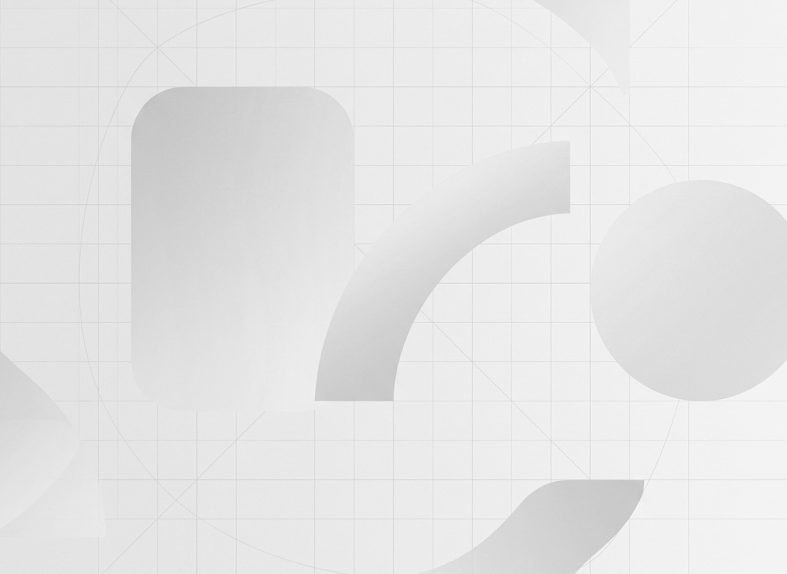

社内ルールを整理
設計テンプレート、命名規則、レビュー観点、テスト方針をPoC対象に合わせて棚卸しします。
詳細設計、コード生成、テスト、改修、E2E、個人情報除去までをAIエージェントでつなぎます。人は計画確認、レビュー、承認、例外判断に集中できます。
資料、既存コード、開発規約、レビュー観点をインプットとし、各AIエージェントが成果物を生成・検証します。対抗AIレビューと人による承認を組み合わせ、品質とガバナンスを両立します。
既存コードと依存関係を解析し、影響調査、改修範囲の判断、テスト対象の整理に利用します。
既存リポジトリの全コードをインデックス化し、
構造的なコード検索を可能にします。
モジュールや関数間の依存関係を自動生成し、
影響調査と改修範囲を自動で判定します。
対抗AIが、計画や生成結果に対して、正確性・不足点・改善点をチェックする。
AIが自身の入力・出力・実行ログを分析し、改善可能なポイントを抽出して提案
ドキュメント雛形、サンプル、開発ルール・規約、レビュー観点・チェックリスト
臨時／Session／短期／長期記憶
Ground Truth化とは、貴社の設計書テンプレート、開発規約、レビュー観点、サンプル、業務ルールをAIエージェントが参照できる基準として整理することです。Kaoooaiは、この基準を設計・実装・テスト・改修の各工程に反映し、成果物の品質と判断基準をそろえます。
設計テンプレート、命名規則、レビュー観点、テスト方針をPoC対象に合わせて棚卸しします。
整理した基準をAIが再利用できる形にし、生成・レビュー・テスト時の参照ルールとして組み込みます。
メンバーや案件が変わっても、共通の基準に沿った設計書、コード、テスト観点を作りやすくします。
詳細設計からコード実装、単体テスト、自動修復、そしてE2Eブラウザテストまで、各AIエージェントが自律的に連携する高効率ワークサイクル。
既存のソースコード、システム依存関係、各種開発規約、およびINPUTとなる要件定義資料を包括的に読み取り、改修に伴う影響範囲や適用すべき設計方針の前提条件を自律的に整理します。

要件定義資料とGround Truth（貴社設計テンプレートやサンプル）を参照し、開発者がすぐにレビューおよび実装に移れる粒度で詳細設計書、入出力定義、処理シーケンス、例外処理、テスト設計観点を自動生成します。
生成された詳細設計書に厳格に基づき、ディレクトリ構成、命名規則、コーディング基準に準拠したソースコードを自動生成。Lintチェックやビルド検証、静的解析を繰り返し、AI専用のGitブランチに自動保存します。
詳細設計書とソースコードを読み込み、正常系・異常系・境界値・例外系テストケースを自動抽出し、単体テストコードを自動生成・実行。カバレッジC2（条件網羅）水準を目指し、実行結果の検証レポートを出力します。
自然言語で記述されたE2Eシナリオをもとに、ブラウザの起動、入力操作、ボタンクリック、ポップアップ制御、画面遷移検証、UI表示状態のスクリーンキャプチャ取得、成否判定レポート出力を支援します。
個人名、住所、メールアドレス、電話番号、銀行・カード番号、API Key、パスワードなどをAI処理前に検出・除去し、安全化したデータだけをLLMへ送信する運用を支援します。
不具合の修正や機能改修のタスクにおいて、改修前の既存コードと影響範囲を分析。修正箇所の特定、コード改修、テストコードの再作成・再実行、結果レポートまでをつなぎ、改修成果物をAI専用ブランチに保存します。
日々の開発プロセスやテスト実行結果、エラー遭遇履歴、対抗AIによるレビュー時のフィードバックログを分析。AI自身の指示定義やコンテキスト（Skills/Prompts）の改善点をレポートとして提案します。
開発現場で継続利用するための制御、確認、運用設計です。
計画、生成、レビューで適したAIエンジンを設定できます。
正確性、不足点、保守性、性能、安全性を別観点で確認します。
計画レポート、影響範囲、残リスクを確認してから実行します。
開発規約、設計方針、レビュー基準を標準化ナレッジとして扱います。
PoC、設定、チューニング、利用支援をプロジェクトに合わせて行います。
セキュリティ要件に応じた構成を検討できます。
Kaoooaiの機能拡張計画。開発工程のさらなる自律化に向けた先進エージェントの研究開発を進めています。
自然言語による対話、手元のポンチ絵、各種設計ドキュメントから仕様意図を読み取り、要件定義および基本設計書のドラフト作成を支援する上流工程エージェントを検討しています。
API間の相互連携や非同期のメッセージング処理を含む、複数機能をまたぐ実務フローのテスト設計とシナリオ連携テスト実行を支援する仕組みを研究しています。
ReactやPHPを対象にした新規開発・改修プロセスについて、対応範囲の拡大を段階的に検証します。
基幹システム（COBOL等）の既存レガシー資産について、解析、改修計画、モダナイゼーション支援の可能性を検証します。
内容に応じてご案内します